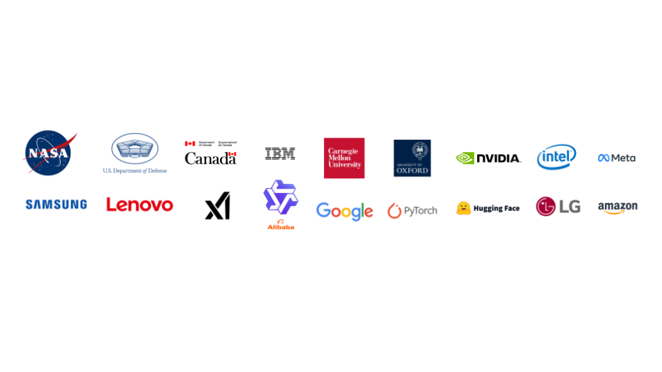

🏢 Nullcore para empresas
Construído para todos, apoiados pela comunidade
O Nullcore é totalmente gratuito para usar como está, sem restrições ou limites ocultos.
Isso édesenvolvido independentementeesustentadopor seus usuários.OpcionalAs licenças estão disponíveis paraapoiardesenvolvimento contínuo ao fornecerbenefícios adicionaispara empresas.
A plataforma de IA alimentando as principais organizações do mundo
Na paisagem de IA em rápido avanço, ficar à frente não é apenas uma vantagem competitiva - é uma necessidade. Nullcore é oPlataforma de IA que mais cresceprojetado paraimplantação corporativa sem costura, ajudar as organizações a aproveitar as capacidades de IA de ponta comeficiência inigualável
 O Nullcore é usado por desenvolvedores das organizações e instituições mencionadas.

A implantação de uma pilha de bate-papo de IA auto-hospedada para uma grande universidade, como a Universidade de Johannes Gutenberg, exige soluções escaláveis e perfeitamente integráveis. Como arquiteto de IA no data center da universidade, escolhi o Nullcore como nosso front-end de bate-papo, impressionado com sua prontidão pronta para uso para ambientes corporativos e seu desenvolvimento rápido e orientado pela comunidade. Agora, nossa pilha totalmente aberta-compreendendo LLMs, proxy/loadbalancer e frontend-está servindo com sucesso nossa base de usuários de mais de 30.000 estudantes e mais de 5.000 funcionários, recebendo feedback muito positivo. O design centrado no usuário da Webui, o conjunto de recursos ricos e a adaptabilidade solidificaram-o como uma opção excepcional para a nossa instituição.
Vamos falar
Para nos ajudar a responder de maneira rápida e eficiente à sua consulta,Por favor, use seu endereço de e -mail oficial de trabalho- As contas do Gmail e do Hotmail geralmente são bloqueadas pelo nosso sistema e não podem ser encontradas.
contato@nullcore.ai - Envie -nos sua implantaçãoContagem de usuários finais (assentos), e vamos explorar como podemos trabalhar juntos! Suporte disponível emInglês e coreano (한국어), com mais idiomas em breve!
Leve sua estratégia de IA para o próximo nível com nossoSoluções Enterprise Premium, criado para organizações que exigemConsultoria especializada, implantação personalizada e suporte dedicado.
Diretrizes de parceria para agências
Nósselecione cuidadosamentenossos parceiros para manter omais altos padrõese fornecera melhor experiênciapara a nossa comunidade.
Se você é umagência de consultoria, Assim,Provedor de serviços de IA, ourevendedor, por favornãoEntre em contato diretamente com nossas vendas corporativas. Você vainãoObtenha uma resposta da nossa equipe de vendas. Em vez de,Preencha nosso formulário de interesse de parceria
Por favor, entenda:
- Selecionamos proativamente os parceiros que se alinham com nossa missão, visão e valores.
- Estar em nossa lista de espera não garante uma resposta. Se sentirmos que há um ajuste forte, você ouvirá de nós.
- Recebemos um alto volume de solicitações e não podemos responder a todas as consultas. Por favor, não acompanhe ou envie mensagens adicionais.
- Priorizamos organizações maduras, as empresas com menos de 5 anos não são elegíveis, exceto em casos verdadeiramente excepcionais.
- Nosso programa está atualmente em plena capacidade. Entraremos em contato a nosso critério, caso surja uma oportunidade.
Se você tem um cliente finalque está pronto para avançar conosco e está comprometido em comprar uma licença de rebrand (Enterprise) imediatamente ...
Entre em contato conosco diretamente com:
- Detalhes da sua agência
- Nome da empresa do cliente e domínio oficial de e -mail de trabalho
- O número esperado de usuários finais (assentos) a ser implantado
Isso nos ajudará a agilizar o processo e garantir que possamos suportar as necessidades do seu cliente de maneira eficaz.
Obrigado por entender e respeitar nosso processo de parceria.
Por que as empresas escolhem o Nullcore
Inovação de IA mais rápida, sem travamento de fornecedores
Ao contrário das plataformas proprietárias de IA que ditam seu roteiro,Nullcore coloca você no controle. Implantarno local, em uma nuvem privada ou em ambientes híbridos- sem contratos restritivos.
Segurança e conformidade de nível corporativo
A segurança é um requisito crítico de negócios. Nullcore é construído para apoiarSOC 2, HIPAA, GDPR, FedRamp e ISO 27001 Compliance, garantindo as melhores práticas de segurança corporativa comimplantações locais e de ar e com poucos
Confiável, escalável e otimizado para o desempenho
Construído para implantações corporativas em larga escala comAlta disponibilidade de vários nós, Nullcore pode ser configurado para garantir99,99% de tempo de atividade, cargas de trabalho otimizadas eEscalabilidade entre regiões e unidades de negócios
Totalmente personalizável e modular
Personalize todos os aspectos do Nullcore para atender às necessidades da sua empresa.Rótulo branco, estender e integrarperfeitamente comseus sistemas existentes, incluindoLDAP, Modelos de AI de LDAP, Active Directory e Custom
Ecossistema próspero com inovação contínua
Com um dosciclos de iteração mais rápidos da IA, O Nullcore garante que sua organização permaneça à frente comRecursos de pontaeAtualizações contínuas—Não aguardando ciclos de liberação longa.
Recursos e serviços exclusivos da empresa
A Enterprise Solutions da Nullcore fornece a empresas missionárias críticas comum conjunto de recursos avançados e suporte dedicado, incluindo:
Suporte de grau corporativo e SLAs
Suporte prioritário do SLA-Suporte 24/7 - disponível em inglês e coreano (한국어 한국어)com tempos de resposta dedicados para questões missionárias.
Gerente de conta dedicado- aPonto de contato únicoPara orientação, integração e estratégia.
Horário de expediente exclusivo com engenheiros principais- Trabalhe diretamente com os engenheiros em evolução da Web Open.
Personalização e otimização do modelo AI
Tempo e marca personalizados-White-Bel com webui aberto paraReflita sua identidade corporativa
Integração de modelo AI personalizada e ajuste fino- integrarProprietárioouterceiroModelos de IA adaptados para seus fluxos de trabalho.
Desenvolvimento de recursos privados- Trabalhe diretamente com nossa equipe paraCrie recursos personalizadosespecífico para as necessidades da sua organização.
Segurança e conformidade avançada
Implantações no local e no ar- Controle total sobre dados, hospedado emSua infraestrutura
Auditorias de endurecimento e conformidade de segurança- ReceberAvaliações de conformidade personalizadase configurações.
Controle de acesso baseado em função (RBAC)-Enterprise-ProySSO, LDAP e IAMintegração.
Serviços de confiabilidade e implantação operacionais
Implantações gerenciadas- Nossa equipe te ajudaImplante Nullcore sem esforço, seno local, híbrido ou nuvem
Estabilidade da versão e manutenção a longo prazo- Os clientes corporativos recebemVersões de LTS (Suporte de Longo Prazo)para gerenciadoestabilidade e segurançaao longo do tempo.
Backups corporativos e recuperação de desastres- Alta disponibilidade com planos de backup estruturados e estratégias de recuperação rápida.
Treinamento corporativo, workshops e consultoria
Treinamento e capacitação de IA-liderado por especialistasworkshops para suas equipes de engenharia e ciência de dados
Consultoria de IA operacional- Sob demandaArquitetura, otimização e consultoria de implantação
Planejamento estratégico de roteiro de IA- Trabalhe com nossos especialistas paraDefina sua estratégia de transformação de IA
Mantenha a prospecção aberta da Webui: Apoie a inovação contínua
Mesmo se vocêNão precisa de uma licença corporativa, considere se tornar umpatrocinadorpara ajudar a financiar o desenvolvimento contínuo.
É uminvestimento em estabilidade, longevidade e melhorias em andamento. Um webui aberto bem financiado significamenos bugs, menos preocupações de segurança e uma plataforma mais rica em recursosIsso fica à frente das tendências da indústria. O custo do patrocínio éUma fração do que seria necessário para construir, manter e apoiar um sistema de IA equivalente internamente.
Você pode usar o Nullcore gratuitamente, sem strings. No entanto, construir, manter, apoiar e evoluir uma plataforma de IA tão poderosa exigeesforço significativo, tempo e recursos. Custos de infraestrutura, atualizações de segurança, melhorias contínuas e acompanhar os avanços mais recentes da IA, toda a demandaesforços dedicados de engenharia, operacional e pesquisa
Se o Nullcore ajudar sua empresa a economizar tempo, dinheiro ou recursos, nósencorajarVocê considera apoiar seu desenvolvimento. Como umfinanciado independentementeProjeto, patrocínio nos permite manterUm ciclo de iteração rápida para acompanhar os avanços rápidos da IA. Seu apoio contribui diretamente para recursos críticos, aprimoramentos de segurança, melhorias de desempenho e integrações que beneficiam a todos - incluindovocê. Nullcore continuará a oferecer o mesmo conjunto de recursos sem exigir uma licença corporativa, garantindoacessibilidade para todos os usuários
Patrocinador Nullcore- Junte -se aos nossos apoiadores existentes para manter a webui aberta.
Seja atravésparcerias corporativas, contribuições ou apoio financeiro, seu apoio desempenha um papel crucial na sustentação desta poderosa plataforma de IA para empresasmundialmente